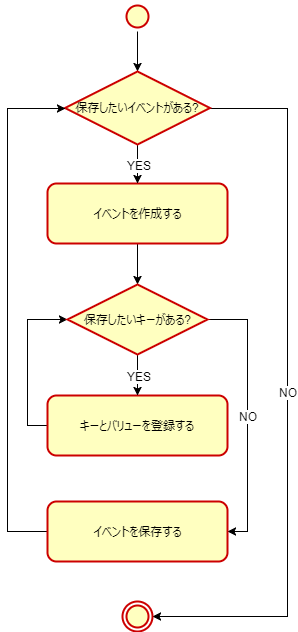

Structure of Report Data
The application uses the Play Report library to save Play Report data (report data) to the Switch console.
Report data is collected and managed in units called events.
The report data is sent automatically by the Switch system to the server. The system is responsible for the timing of when report data is sent to the server. However, the application can request that the system send the report data immediately.
The report data that is sent to the server is temporarily accumulated in online data storage (Amazon S3). You can get the access key to this data storage with the Play Report web tool. Analyze the report data by importing it to the analysis tool that was prepared independently for each application.
The application specifies an event ID and creates an event.
Say you have an action game and want to aggregate data for events where the player is defeated by an enemy. For this event, you might register "the x-coordinate of the player's location" and "the ID representing the enemy type" as a key-value pair.
The following limitations apply for the number of application-defined key-value pairs that can be added to a single event.
- The maximum size for key-value pairs is 16 KiB.
- If the application tries to add a key-value pair that would result in this size being exceeded, the attempt will fail and an error will be returned.
- The maximum number of root level keys is 100.
- If the type of a value is a structure or array, the number of keys will be counted as 1, regardless of the number of elements in the structure or array.
The API Reference documentation for NintendoSDK 18.x.x and earlier states that the number of key-value pairs is limited to 100 pairs. However, even if your application has used one of these versions of the SDK, the preceding limitations will be applied.
Event and Key Specifications
| Event |
|
|---|---|
| Key |
|
Aggregating Partitioned Events
If there is data that you want to aggregate but must partition into multiple events (for example, event A and event B), consider the possibility that only one or the other event might get saved to the server because there is a size limit to the key-value pairs and a limit on the number of root level keys.
The following example shows how to deal with this issue.
- Create a key, X, in both events that is associated with both A and B.
- Aggregate only the data for A and B events that have matching values for key X and are saved in the server as a set.
Saving Report Data
The application saves report data to the Switch system by repeating the three-step process of creating an event, registering one or more key-value pairs for that event, and saving the event.

Setting Nintendo Accounts for Sending Play Reports
There are specific conditions for saving and sending report data. Details about these conditions are described in a later section on this page (see Conditions for Saving and Sending Report Data). This section describes the Nintendo Account settings for these conditions.
Usage Information
Due to legal requirements to protect personal information, report data cannot be sent to the server from users who do not allow usage information to be sent.
Depending on the country or region that has been set for the Nintendo Account, users might be able to configure the Usage information options in their Nintendo Account settings and choose whether to allow information to be sent. For some countries and regions, these settings cannot be changed (the options are not displayed).
In Usage information, the user can set whether to allow or not allow data to be collected and processed for each of the following two separate purposes.
- To help improve Nintendo products and services
- To provide news and information tailored to you
Play reports are sent if To help improve Nintendo products and services is set to Allow. It does not matter whether To provide news and information tailored to you is set to Allow.
English-Language Screen
Japanese-Language Screen
Differences Due to Country or Region
The following aspects of Usage information vary depending on the country or region.
- The default values that are set for sending usage information for each purpose when the Nintendo Account is created
- Whether the settings to send usage information can be changed (whether Usage information is displayed in the Nintendo Account page)
The following table shows some of the current settings for Nintendo Accounts. The settings may be changed when the server is updated, so the information is only for reference.
|
Country or Region |
Send Usage Information Default Setting | Can Send Setting Be Changed? |
|---|---|---|
|
Japan China |
Allow | Not possible |
|
Korea (see Note 1) United States (see Note 2) Canada (see Note 2) Brazil (see Note 2) Most European countries Republic of South Africa Australia New Zealand Taiwan |
Allow | Possible |
| Hong Kong | Do not allow | Possible |
Note 1: For Korea, "Can Send Setting Be Changed?" was changed to "Possible" in an update in June 2023.
Note 2: For the United States, Canada, and Brazil, "Can Send Setting Be Changed?" was changed to "Possible" in an update in February 2023.
- If the entry in the Send Usage Information Default Setting column in the table is Allow, it means that Allow is set by default both for To help improve Nintendo products and services and for To provide news and information tailored to you. Similarly, Do not Allow indicates that the default value for both settings is Do not Allow.
- For China, read "account for China" where it says Nintendo Account.
Report Data and User Accounts
Saving With a Specified User Account
The application can specify a user account when it saves the report data (when it makes the function call).
If user accounts are specified when report data is saved, a scrambled value of the NSA ID is recorded in the report data.
Specify the user account if you want to identify the report data individually for each network service account.
Saving Without Specifying a User Account
Do not specify a user account when you save the report data if you intend to aggregate report data about the application when it is played without selecting a user account.
If a user account is not specified, a scrambled value of the NSA ID is not recorded in the report data.
Conditions for Saving and Sending Report Data
There are specific conditions for saving and sending report data.
Nintendo Account-Related Conditions for Saving
Report data is saved to a dedicated region in the Switch system memory. However, under the following conditions, sometimes the data is not saved. Report data that is not saved is not sent to the server.
| Saving With User Account Specified |
The report data is saved if a Nintendo Account is linked to the user account. This setting is not affected by whether the Nintendo Account allows play reports to be sent. If there is no Nintendo Account linked to the user account, it will not be saved. |
|---|---|
| Saving Without User Account Specified | Always saved. |
Even if these conditions are satisfied, the report data might not be saved, for example because of problems with the data.
Nintendo Account-Related Conditions for Sending
The report data saved to the dedicated region in Switch system memory is sent to the server by the system. However, under the following conditions, sometimes the save reports are not sent.
|
User Account Specified When Saving |
The report data will be sent if allowed by the Nintendo Account linked to the user account. It is not sent if sending has not been allowed. |
|---|---|
| No User Account Specified When Saving | The report data is sent if allowed by any Nintendo Account linked to a user account on the console. |
Conditions for Saving and Sending When User Agreement Check Is Disabled in the Development Environment
In the development environment, you can disable the User Agreement Check setting using DevMenu.
For more information about changing the setting, see NintendoSDK Documents > Features > Controlling the Development Hardware > DevMenu > Play Report Settings (Japanese, English).
When the User Agreement Check setting is disabled, the conditions for saving and sending report data change in the following ways.
Saving Report Data With a Specified User Account
In this case, the saving and sending of reports depends on the state of the specified user account, as follows.
| State of the Specified User Account | Are Reports Saved and Sent? |
|---|---|
| Not linked with either a network service account or a Nintendo Account. | Reports are not saved and sent. |
| Linked to only a network service account (see note 1). |
If a Nintendo Account is not required for using network-services (see note 2), reports are saved and sent. Otherwise, reports are not saved and sent. |
| Linked to both a network service account and a Nintendo Account. |
Reports are always saved and sent, regardless of whether the linked Nintendo Account allows play reports to be sent. |
-
Note 1: The state where the user account is only linked with a network service account can occur if the association has been made using the DevMenu feature for managing accounts.
For more information, see NintendoSDK Documents > Features > Controlling the Development Hardware > DevMenu > Managing Accounts. -
Note 2: Refers to the case where the Accounts > Firmware settings > Requires Nintendo Account for use of network service check box in DevMenu has been cleared.
For more information, see NintendoSDK Documents > Features > Controlling the Development Hardware > DevMenu > Managing Accounts.
Saving Report Data Without a Specified User Account
In this case, reports are always saved and sent.
Reports can be sent if the User Agreement Check setting has been disabled, even if there are no users accounts on the console that are linked to a Nintendo Account or a network service account.
Saving Reports for a User Account Not Linked to a Nintendo Account in the Development Environment
In the development environment, you can save reports for a user account that is not linked to a Nintendo Account by selecting the Allow to save unlinked user report option in DevMenu.
For more information about this option, see NX Add-On 12.2.0 or later of NintendoSDK Documents > Features > Controlling the Development Hardware > DevMenu > Play Report Settings (Japanese, English).
This feature is available on development hardware with NintendoSDK SystemUpdater for NX 12.0.0+Build3.0 or later.
If the Allow to save unlinked user report option is selected, play reports are always saved even if the specified user account is in either of the following states.
- Not linked with either a network service account or a Nintendo Account.
- The
nsa_idsystem key of the report is empty (the value is null). For more information about system keys, see 5 Play Report Web Tool.
- The
- Linked to only a network service account.
- The value in the
nsa_idsystem key of the report is the target user's network service account internal ID.
- The value in the
Also, you can disable the User Agreement Check setting to send these saved reports unconditionally.
Application Development Flow
The assumed application development flow is as follows.
- Determine the information that needs to be sent and implement the feature for saving play reports in the application.
- Confirm that the report data is saved to the Switch console as intended, using the DevMenuCommand features to write the report data to a log or save it to a file. If necessary, rework the implementation in your application.
- For more information about DevMenuCommand, see NintendoSDK Documents > Features > Controlling the Development Hardware > DevMenuCommand > Play Report Feature.
- Have the Play Report administrator use the web tool to get the access key to the online data storage (Amazon S3). Share this access key with the necessary members and prepare to load data into the analysis tool prepared for each application.
CONFIDENTIAL